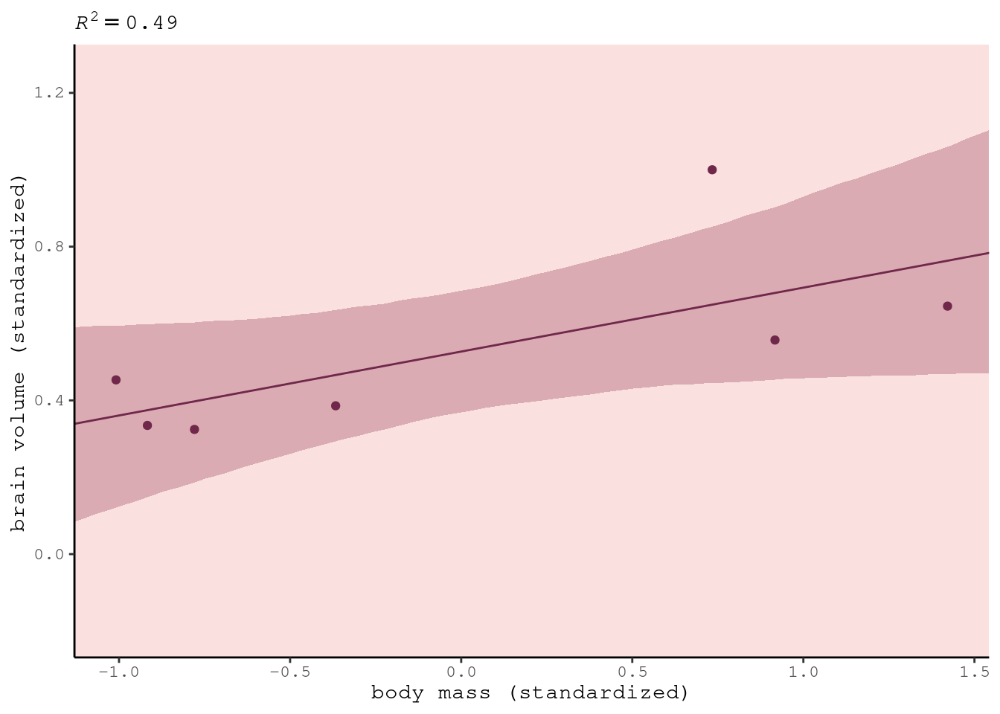

7.1 The problem with parameters

The basic problem is that models that are too simple don’t know enough; and models that are too complex learn too much. On the extrmee, you can encrypt every data point as a parameter, but it will make terrible predictions. Want to learn the “regular features” of the sample. Multilevel models don’t work like this because they’re less liekly to overfit. I have a model with 27K parameters, and it overfits very little because of this hierarchical structure.
7.1.1. More parameters (almost) always improve fit

Humans have big brains. If we look at body mass v brain volume, there is some association. What’s the statistical relationship?
sppnames <- c( "afarensis","africanus","habilis","boisei","rudolfensis","ergaster","sapiens")
brainvolcc <- c( 438 , 452 , 612, 521, 752, 871, 1350 )
masskg <- c( 37.0 , 35.5 , 34.5 , 41.5 , 55.5 , 61.0 , 53.5 )
d <- data.frame( species=sppnames , brain=brainvolcc , mass=masskg )
\(R^2\) is one of the most over-used measures. If there’s no variance in the residuals, \(R^2\) = 1. It’s trivial to get there. A bit of a joke, but I’ve seen it in Nature.
d$mass_std <- (d$mass - mean(d$mass))/sd(d$mass)
d$brain_std <- d$brain / max(d$brain)m7.1 <- quap(
alist(
brain_std ~ dnorm( mu , exp(log_sigma) ),
mu <- a + b*mass_std,
a ~ dnorm( 0.5 , 1 ),
b ~ dnorm( 0 , 10 ),
log_sigma ~ dnorm( 0 , 1 )
), data=d )I’ve used exp(log_sigma) in the likelihood, so that the result is always greater than zero.
Rethinking:
You could use OLD to get posteriors for these brain size model, e.g. by using lm. But you won’t get a posterior for sigma.
m7.1_OLS <- lm( brain_std ~ mass_std , data=d )
post <- extract.samples( m7.1_OLS )Bayesian inference means approximating the posterior distribution. It does not specify how that approximation is done.
We’ll compute \(R^2\) ourselves by computing the variance of the residuals, and the variance of the outcome variable. This means the actual empirical variance, not the variance that R returns with the var function, which is a frequentist estimator and therefore has the wrong denominator. So we’ll compute variance the old fashioned way: the average squared deviation from the mean. rethinking::var2 does this.
set.seed(12)
s <- sim( m7.1 )
r <- apply(s,2,mean) - d$brain_std
resid_var <- var2(r)
outcome_var <- var2( d$brain_std )
1 - resid_var/outcome_var## [1] 0.477459Let’s write a function to do this again:
R2_is_bad <- function( quap_fit ) {
s <- sim( quap_fit , refresh=0 )
r <- apply(s,2,mean) - d$brain_std
1 - var2(r)/var2(d$brain_std)
}Now we’ll compare 5 models, each just a polynomial of higher degree.
m7.2 <- quap(
alist(
brain_std ~ dnorm( mu , exp(log_sigma) ),
mu <- a + b[1]*mass_std + b[2]*mass_std^2,
a ~ dnorm( 0.5 , 1 ),
b ~ dnorm( 0 , 10 ),
log_sigma ~ dnorm( 0 , 1 )
), data=d , start=list(b=rep(0,2)) )m7.3 <- quap(
alist(
brain_std ~ dnorm( mu , exp(log_sigma) ),
mu <- a + b[1]*mass_std + b[2]*mass_std^2 +
b[3]*mass_std^3,
a ~ dnorm( 0.5 , 1 ),
b ~ dnorm( 0 , 10 ),
log_sigma ~ dnorm( 0 , 1 )
), data=d , start=list(b=rep(0,3)) )
m7.4 <- quap(
alist(
brain_std ~ dnorm( mu , exp(log_sigma) ),
mu <- a + b[1]*mass_std + b[2]*mass_std^2 +
b[3]*mass_std^3 + b[4]*mass_std^4,
a ~ dnorm( 0.5 , 1 ),
b ~ dnorm( 0 , 10 ),
log_sigma ~ dnorm( 0 , 1 )
), data=d , start=list(b=rep(0,4)) )
m7.5 <- quap(
alist(
brain_std ~ dnorm( mu , exp(log_sigma) ),
mu <- a + b[1]*mass_std + b[2]*mass_std^2 +
b[3]*mass_std^3 + b[4]*mass_std^4 +
b[5]*mass_std^5,
a ~ dnorm( 0.5 , 1 ),
b ~ dnorm( 0 , 10 ),
log_sigma ~ dnorm( 0 , 1 )
), data=d , start=list(b=rep(0,5)) )For the last one we replace the standard deviation with 0.001.
m7.6 <- quap(
alist(
brain_std ~ dnorm( mu , 0.001 ),
mu <- a + b[1]*mass_std + b[2]*mass_std^2 +
b[3]*mass_std^3 + b[4]*mass_std^4 +
b[5]*mass_std^5 + b[6]*mass_std^6,
a ~ dnorm( 0.5 , 1 ),
b ~ dnorm( 0 , 10 )
), data=d , start=list(b=rep(0,6)) )post <- extract.samples(m7.1)
mass_seq <- seq( from=min(d$mass_std) , to=max(d$mass_std) , length.out=100 )
l <- link( m7.1 , data=list( mass_std=mass_seq ) )
mu <- apply( l , 2 , mean )
ci <- apply( l , 2 , PI )
plot( brain_std ~ mass_std , data=d )
lines( mass_seq , mu )
shade( ci , mass_seq )

This isn’t a bad model. \(R^2\) is 0.5 - that’s pretty good. But can you do better?

Sure, make it a parabola. Does a little better. Why stop there?

We can make it all the way to 6 parameters, then we run out of data points.

Maybe brain evolution is cubic.


Finally, we’ve reached nirvana - the singularity. If all you do basing your model on \(R^2\), this is the danger. In multiple regression, it’s less obvious that it’s happening.
7.1.2. Too few parameters hurts, too

The model is overly sensitive. We can repeat the linear regression, removing one data point at a time. The lines don’t move very much. Drops a lot when we drop homo sapiens.

This fifth-order polynomial.
#d_minus_i <- d[ -i , ]